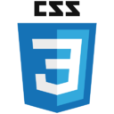

{quiSuis-je}
Diplômé Master Achat et Négooces Internationaux en reconversion professionnelle dans le computer science.
{langues (lues, écrites et parlés)}
Anglais, français et espagnole.
{autresCompétences}
- Bon communicant.
- Esprit critique et observateur.
- Stratégie e-commerce & Marketing digital.
- Techniques de négociation.
- Trading des crypto-actifs et analyse des tendances du marché financier de cryptomonnaies.
{softwaresEtCodes}
|  |
{forces}
- Créatif
- Rigoureux
- Dynamique/Motivé
- Entrepreneur
- Orienté résultats
- Pérséverant
{passions}
- Partager des moments conviviaux avec ma famille et mes amis.
- Blockchain & Crypto actifs
- Nouvelles technologies, IPFS, Smart Contracts, Web3...
- Course à pied